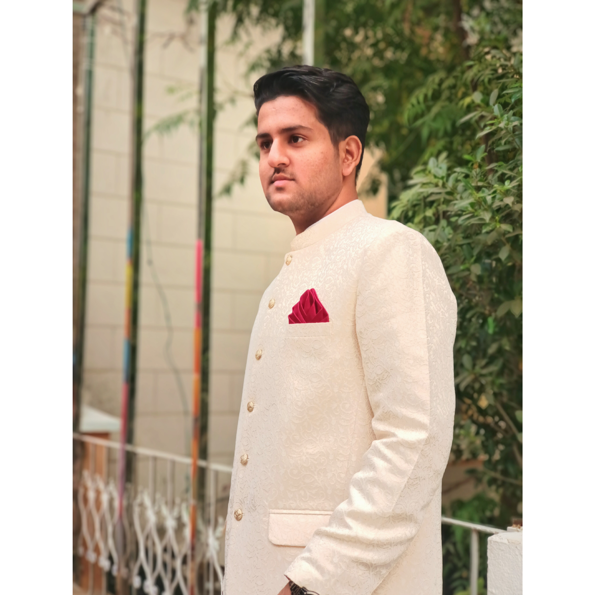

Welcome to my Portfolio

My academic journey began with a foundation in science, where I completed my FSC Pre-Engineering from Punjab Group of Colleges. Then I moved myself to complete my bachelor degree in Computer Science from Federal Urdu University of Arts Science and Technology, Islamabad. This early exposure to science and engineering further ignited my curiosity and laid the groundwork for my future ventures in the world of computers.
Throughout my academic years, I immersed myself in diverse projects and academic endeavors, honing my skills in Python, Django, and Machine Learning. My academic achievements, including topping my previous batch in the 7th semester with a perfect GPA of 4.0 out of 4.0, reflect my unwavering dedication to academic excellence.
As an aspiring Python developer and machine learning enthusiast, I eagerly delved into the captivating realm of AI and its potential to transform industries and enhance human experiences. My Final Year Project (FYP), focused on developing a Web Application for Urdu Speech Emotion Recognition System, fueled my passion for language technology and deep learning algorithms.
Beyond my academic endeavors, I actively engaged in extracurricular activities and leadership roles, such as serving as the Python Developer Lead for Google Developer Student Clubs (GDSC). In this capacity, I organized seminars and workshops to foster a vibrant community of aspiring developers, promoting collaborative learning and knowledge-sharing.
With a keen eye for aesthetics and an appreciation for design, I have also developed a profound interest in front-end web development. The process of creating visually stunning and user-friendly web applications brings me immense joy and satisfaction. I believe that combining technology with elegant design elements can elevate user experiences to new heights.
Driven by my quest to create intelligent solutions that empower and enrich lives, I find myself continually seeking opportunities to contribute my skills and passion to meaningful projects. My goal is to be at the forefront of technological innovations, making a positive impact through innovative solutions and user-centric applications.
Through this platform, I aim to share my knowledge, insights, and experiences with the vibrant tech community. Whether it's discussing the latest advancements in AI, web development, or sharing coding tips and tricks, my desire is to inspire and be inspired by fellow tech enthusiasts and learners.
So, join me on this exhilarating journey as we embark on a quest to explore the possibilities of technology and uncover the wonders it holds for the world. Together, let's embrace the infinite potential of innovation and create a digital future that fosters growth, inclusivity, and empowerment for all.
Thank you for visiting, and I look forward to connecting with you on this thrilling expedition!
Warm regards,
Sufian Abid
About Me
Greetings! I'm Sufian Abid, a tech enthusiast, and a creative problem solver. My journey into the world of technology began with a spark of curiosity that has now ignited into a passion for innovation. After completing my FSC Pre-Engineering from Punjab Group of Colleges, I embarked on an exciting academic journey in Computer Science at Federal Urdu University of Arts, Science and Technology (FUUAST).
Throughout my BSCS program, I've been committed to excellence, maintaining a commendable CGPA of 3.49. I specialize in Python development and Django framework, with a strong focus on building web applications that merge functionality and aesthetics seamlessly. My enthusiasm for front-end web development has led me to create visually appealing interfaces that deliver exceptional user experiences.
During my academic journey at FUUAST, I embraced challenges, excelled in my studies, and even had the privilege of leading the Python Developer team at Google Developer Student Clubs (GDSC). Organizing seminars and workshops not only enriched my skills but also allowed me to foster a community of passionate learners.
My thirst for knowledge doesn't stop at coding – I'm also well-versed in Machine Learning, particularly NLP and Urdu Speech Emotion Recognition. This knowledge has been a driving force behind my captivating Final Year Project, where I developed a cutting-edge web application for Urdu Speech Emotion Recognition.
Beyond technology, I'm an avid explorer and an enthusiastic learner. I have a keen interest in understanding the dynamics of the world around us, including politics, economics, and social issues. I believe that a well-rounded perspective is crucial for developing holistic solutions that positively impact our society.
When I'm not immersed in coding, you can find me indulging in my passion for literature. I find solace in the pages of books, exploring diverse genres and expanding my horizons through reading. I also have a culinary side – experimenting with new recipes and creating gastronomic delights is one of my favorite creative outlets.
Skills
Web Development
I possess a strong proficiency in web development, specializing in both front-end and back-end technologies. My experience includes creating dynamic and responsive web applications using HTML, CSS, and JavaScript. I have a solid understanding of modern web development frameworks, including Bootstrap and Materialize, to craft visually appealing and user-friendly interfaces.
Python Development
Python is my primary programming language, and I have honed my skills in various Python frameworks, libraries, and tools. I am proficient in using Django for building robust and scalable web applications, and I have experience in working with Flask for lightweight projects. My expertise extends to creating RESTful APIs, managing databases, and implementing authentication systems.
Machine Learning and NLP
I have a solid foundation in Machine Learning concepts and techniques, with a keen interest in Natural Language Processing (NLP). I have successfully applied machine learning algorithms to solve real-world problems and have hands-on experience with libraries such as scikit-learn and TensorFlow. My knowledge of NLP allows me to explore text data, perform sentiment analysis, and develop language models.
Urdu Speech Emotion Recognition
My passion for language technology led me to develop a cutting-edge web application for Urdu Speech Emotion Recognition. This project demonstrates my ability to delve into complex domains and apply advanced techniques. I am proficient in processing audio data, feature extraction, and building machine learning models for emotion classification.
Front-End Frameworks
In addition to core web technologies, I am well-versed in front-end frameworks such as React and Vue.js. I have utilized these frameworks to create interactive and dynamic user interfaces, leveraging components, state management, and routing. This enables me to deliver seamless and engaging user experiences.
Version Control and Collaboration
I am proficient in utilizing version control systems like Git, enabling efficient collaboration on projects. I am experienced in working with remote repositories, branching, merging, and resolving merge conflicts. This skill ensures smooth teamwork and organized project management.
Communication Skills
Effective communication is a cornerstone of my professional approach. I excel in conveying complex technical concepts in a clear and concise manner, both in written and verbal communication. Whether collaborating with teammates, presenting ideas, or engaging in discussions, my strong communication skills contribute to a collaborative and productive work environment.
Problem Solving
I have a knack for tackling intricate challenges and arriving at innovative solutions. I approach problems analytically, breaking them down into manageable components and devising systematic approaches to overcome them. This problem-solving mindset empowers me to navigate obstacles and contribute valuable insights to projects.
Work
Front-End Web Developer Internship
During my internship at ENSYCD Technologies, I had the privilege of contributing to the front-end development of various web applications. I gained hands-on experience in crafting responsive and visually engaging interfaces using HTML, CSS, and JavaScript. Collaborating with a dynamic team, I honed my skills in UI/UX design and optimized user experiences.
Remote Front-End Web Developer Internship
My remote internship with Interns.pk broadened my horizons as a front-end web developer. Working in a virtual environment, I contributed to the development of responsive web interfaces and learned to collaborate effectively in a remote setting. This experience enhanced my adaptability and refined my technical skills.
Python Developer Lead - GDSC
I proudly led the Python Developer team at my university's Google Developer Student Club (GDSC). In this role, I organized seminars, workshops, and coding challenges to nurture a vibrant community of aspiring developers. This experience strengthened my leadership skills and fostered a culture of collaborative learning.
Client-Based Project: Urdu Speech Emotion Recognition
I spearheaded a significant project in collaboration with Emulation.AI, developing a web-based application for Urdu Speech Emotion Recognition. Leveraging Django and Python, I engineered a sophisticated system that accurately detects emotions in spoken Urdu. This endeavor showcased my dedication to merging language technology and AI.
Client-Based Project: Urdu Speech Emotion Recognition
I spearheaded a significant project in collaboration with Emulation.AI, developing a web-based application for Urdu Speech Emotion Recognition. Leveraging Django and Python, I engineered a sophisticated system that accurately detects emotions in spoken Urdu. This endeavor showcased my dedication to merging language technology and AI.